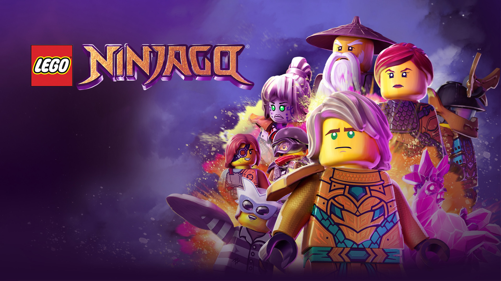

 Série 2022
Série 2022
Um grupo chamado Novos Ninjas aparece na Cidade de Ninjago, lutando contra contrabandistas de pedras da vingança.
A equipe ninja perdeu a fé e se desfez. Nya vaga pelo Mar Infinito como um dragão de água, mas então começa a recuperar suas memórias.
Ela encontra um elemental da água chamado Nyad, que a ajuda a encontrar o caminho de volta para casa. Os ninjas se reúnem e descobrem um carregamento
secreto de pedras da vingança em um túnel do metrô. Eles são forçados a lutar contra a Srta. Demeanor e seus capangas, mas são humilhados quando os
Novos Ninjas derrotam os vilões.